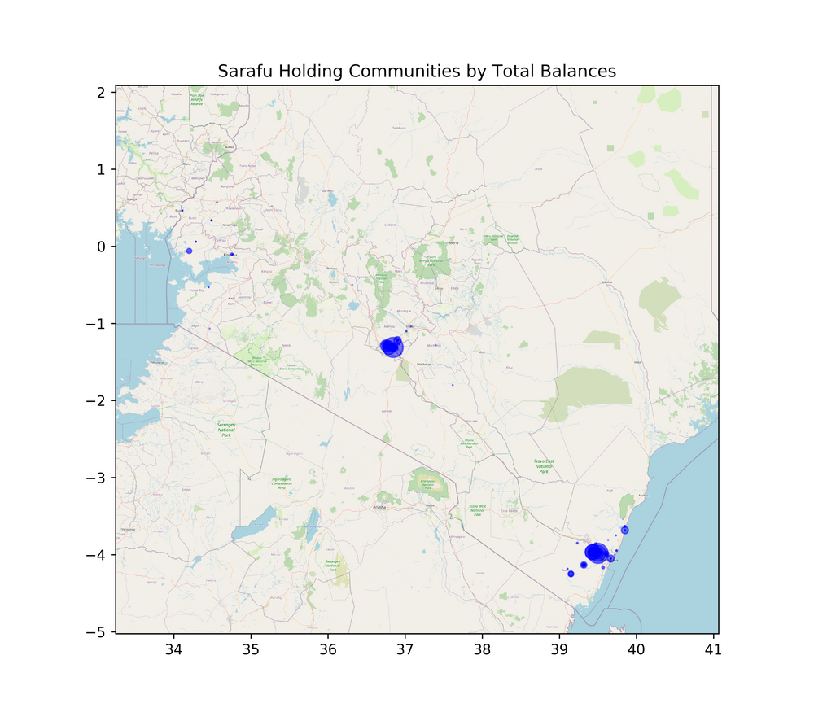
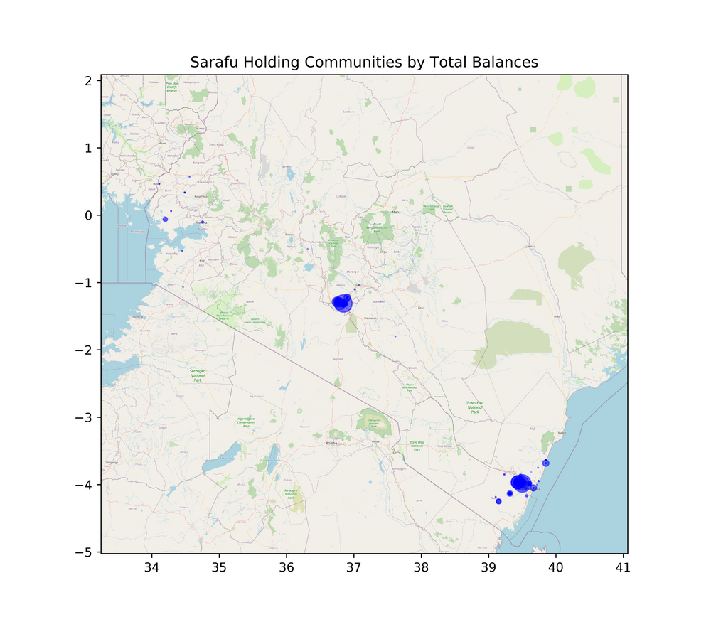

Sarafu Network Kenya Mid-Year CIC Update
This year started off intense then became insane starting in April and through it all the Grassroots Economics team, community groups and partners managed to do some amazing work to pull communities together to support each other during crisis.
http://dashboard.sarafu.network

We've reached nearly 90Million worth (~900,000 USD) of Community Inclusion Currency trading between 30,0000 users in Kenya for basic needs in over 300,000 Transactions on a blockchain. When combined with aid distribution and donor support we have seen over $1 Million USD worth of trade on the Sarafu Network in Kenya in 74 different locations/villages. This growth has been via word of mouth - no advertising! Below you can see the break down of spending in different areas.
 

While most Sarafu users are in rural areas such as Kwale, there has been a huge focus by the Red Cross in piloting in Mukuru since April (an informall settlement in Nairobi) and the results there speak for themselves with over 60Million Sarafu (~600,000 USD) traded among people trying to support eachother during Covid times. The cost of these programs is a very small fraction (roughly a 17X multiplier) of the impacts we are seeking and as they become more and more self-sustainable through village created CICs we expect this multiplier to just keep increasing. It's amazing!
What's Going on!
The Sarafu token (CIC) was meant to be a short term solution. We merged 11 Community Currencies last year into the Sarafu token in order to move to a different set of software with the goal of open up communities to create their own tokens by February this year.... but we got delayed in terms of software development. Then Covid hit and we started distributing more and more Sarafu to the many many more people who wanted to using it to form barter networks.
Right now we are working hard to enable these community groups shown above to create their own CIC. They will convert the Sarafu they have now and the reserve will go into their own tokens. See the training video to the left. We have a strong field and phone support team that is making this happen together with Kenya Red Cross.
Economies around the world are in a state of shock, and collapse. Already fragile communities are really suffering already. Thank goodness there was a good harvest in Kenya this season - but it won't last long. We hope these tools will provide a public infrastructure that helps communities weather this crisis and thrive but the work needs a lot of support.
What's Next?
- We are making steps from Proof of Concept to supporting communities across Kenya and continuing to develop open source tools for communities around the world.
- As the groups collect their Sarafu this month and next inorder to create their own CICs we expect Sarafu trade to drop then multiple CIC trade to start in September/October. Excited to see the Sarafu token converted / liquidated and its reserve used as the seed (collateral pool) for over 40 CICs by the end of this year.
- On the tech side we are extremely excited about bloxberg.org and looking at bridging all kinds of potential reserve tokens like XCHF.
- Expanding on and helping the greater world in understanding the basic Potluck model of CIC creation as it is used in Kenyan villages and potentially far beyond.
What we need!
- Programmers! See our GitLab. (also some good links there for training materials)
- Research and data analysis to understand more about how CICs are being used and how they can be used / created better.
- Simulation and Modeling for these systems in different areas.
- Community, faith based and business networks that want to create sustainable supply chains and food security.
- Funding! We are only able to build these systems if we can support our team.
- Direct Community Support - You, Donors and Impact investors can give directly to people in dire need either through CICs or via Mpesa right to their telephone in Kenya.
- Contact us to get more involved! to get more involved!
- Visit us on Visit us on Telegram for discussions